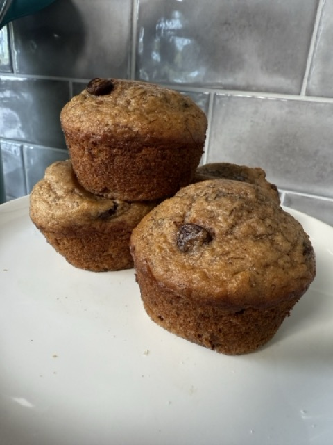

Home
Banana Applesauce Protein Muffins

Our family's favorite banana muffins
In our house, muffins are a favorite breakfast and snack item, which means -- we eat a lot of muffins. To balance the carb loading of that many muffins, I developed this recipe to include more protein, while still maintaining the expected moisture level of a yummy banana muffin. The trick is using enough large ripe bananas, and if you don't have that, adding more applesauce to make up for it.
Wet Ingredients
- 6 large ripe bananas
- 1/2 sugar
- 2 large eggs
- 1/3 c avocado oil
- 1 c applesauce
Dry Ingredients
- 2 c all purpose flour
- 1 c whole wheat flour
- 1/2 c vanilla protein powder
- 2 t baking soda
- 2 t baking powder
- 1 t salt
Yummy Extras
- 1 c mini chocolate chips
Steps
- Preheat oven to 350F
- Spray muffin tins
- Mix together wet ingredients
- Mix dry ingredients into wet ingredients
- Stir in chocolate chips
- Fill muffin cups 3/4 full
- Bake 12-15 mins and test for doneness